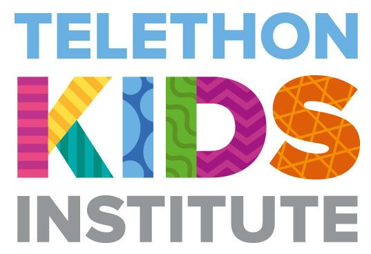

Alternate References For Transcriptomics
Adelaide Bioinformatics Seminars
May 3, 2024
About Me
- Postdoctoral Fellow, Black Ochre Data Labs, Indigenous Genomics, Telethon Kids Institute
- 2020-2022: Dame Roma Mitchell Cancer Research Labs, University of Adelaide
- 2014-2020: Bioinformatics Hub, University of Adelaide
- 2008-2018: Slowest PhD Student in the world…
- Dec 2002: First used R &
limma
- 1st Year B.Sc. in 1986 \(\implies\) Dropped out in 1987



Bioconductor Package Developer


motifTestR
- Was adding motif enrichment testing to the GRAVI workflow
- Decided to avoid the MEME-Suite 🤯
- Plays badly with
conda - I struggle to interpret the results
- Not R native (although
memesdoes wrap some of it)
- Plays badly with
- Particularly interested in motif positions within a set of sequence
- Analogous to
centrimo
- Analogous to
- Added enrichment testing because I could
Transcript-Level Analysis
salmonprovides transcript-level counts with overdispersion estimates!- Can we modify a reference transcriptome using a set of variants?
Common Genes Being Impacted

Taking the 20 most common shifts
- HLA-A
- HLA-H
- Ribosomal proteins
- Histone Proteins
Overdispersion Estimates

Looking at how the number of transcripts / gene also impacts these
Changing Transcripts: Transcript-Level Categories
Lots of change between but no categories really sing out
Acknowledgements
Black Ochre Data Labs
Alex Brown
Jimmy Breen
Sam Buckberry
Yassine Souilmi
Bastien Llamas
Katharine Browne
Liza Kretzschmar
Alastair Ludington
Holly Massacci
Sam Godwin
Kaashifah Bruce
Rebecca Simpson
Sarah Munns
Ashlee Thomson
TKI / ALIGN
Johanna Barclay
Amanda Richards-Satour
Justine Clark
Rose Senesci
Analee Stearne
Louise Lyons
Dawn Lewis
Mary Brushe
Karrina DeMasi
Phoebe McColl
NCIG
Hardip Patel
SAHMRI
Tash Howard
Marlie Frank
SAGC
Sen Wang
Paul Wang
Renee Smith
University of Adelaide
Lachlan Baer
Monica Guilhaus
Wenjun (Nora) Liu
Megan Monaghan

References
Baldoni, Pedro L, Yunshun Chen, Soroor Hediyeh-Zadeh, Yang Liao, Xueyi Dong, Matthew E Ritchie, Wei Shi, and Gordon K Smyth. 2024. “Dividing Out Quantification Uncertainty Allows Efficient Assessment of Differential Transcript Expression with edgeR.†Nucleic Acids Res. 52 (3): e13.
Easteal, Simon, Ruth M Arkell, Renzo F Balboa, Shayne A Bellingham, Alex D Brown, Tom Calma, Matthew C Cook, et al. 2020. “Equitable Expanded Carrier Screening Needs Indigenous Clinical and Population Genomic Data.†Am. J. Hum. Genet. 107 (2): 175–82.
Kaminow, Benjamin, Sara Ballouz, Jesse Gillis, and Alexander Dobin. 2022. “Pan-Human Consensus Genome Significantly Improves the Accuracy of RNA-seq Analyses.†Genome Res. 32 (4): 738–49.
Sibbesen, Jonas A, Jordan M Eizenga, Adam M Novak, Jouni Sirén, Xian Chang, Erik Garrison, and Benedict Paten. 2023. “Haplotype-Aware Pantranscriptome Analyses Using Spliced Pangenome Graphs.†Nat. Methods, January.
Srivastava, Avi, Laraib Malik, Hirak Sarkar, Mohsen Zakeri, Fatemeh Almodaresi, Charlotte Soneson, Michael I Love, Carl Kingsford, and Rob Patro. 2020. “Alignment and Mapping Methodology Influence Transcript Abundance Estimation.†Genome Biol. 21 (1): 239.